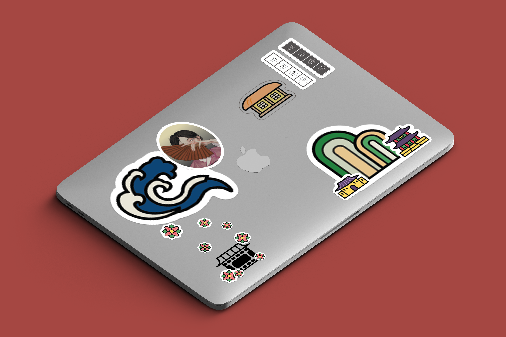
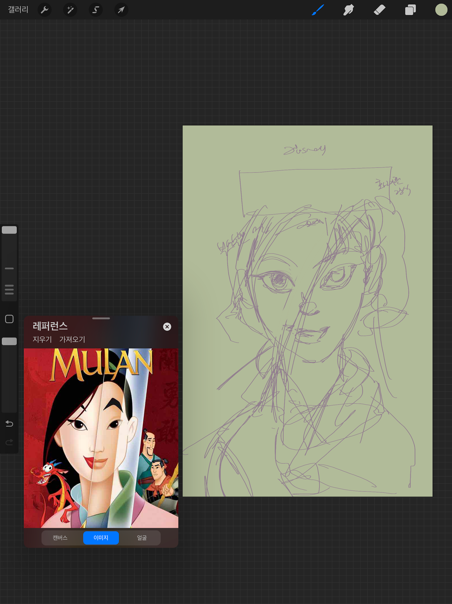
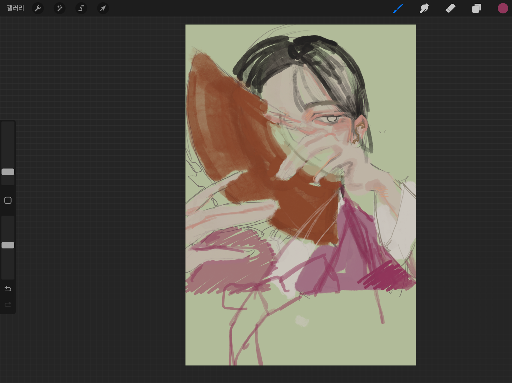
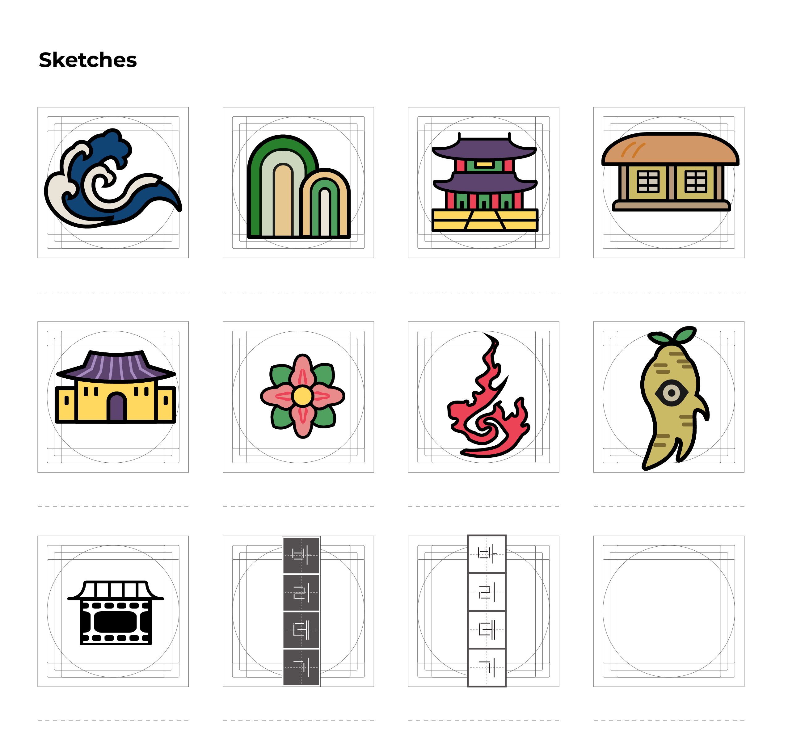
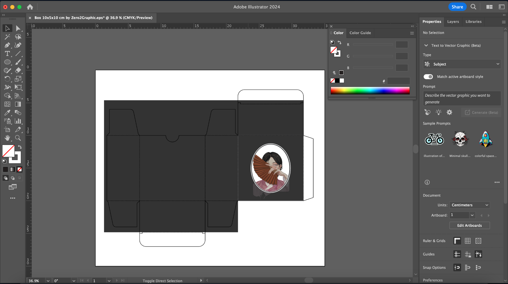
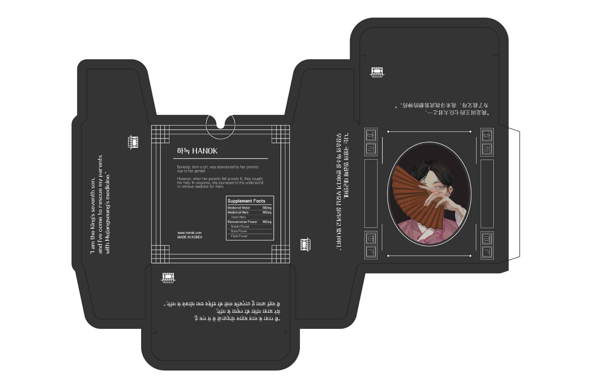
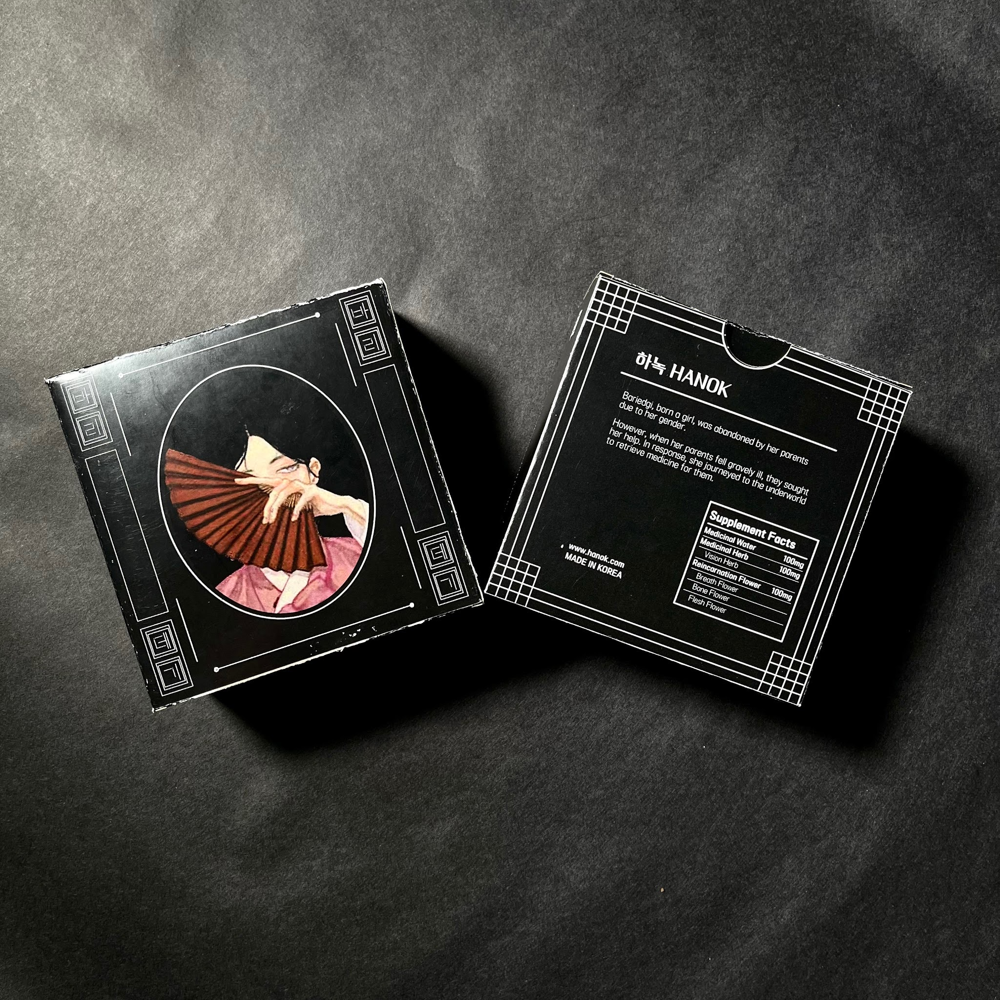

Hanok is a cultural design project that blends traditional Korean narratives with modern aesthetics to engage global audiences. I led the storytelling, illustration direction, and product design for a new brand that reinterprets Korean heritage through contemporary visual language. The project began with a modern retelling of the Korean folktale Princess Bari and expanded to include illustrated merchandise concepts inspired by Korean art, architecture, and symbolism.
Design Problem
While Korean pop culture has become globally popular, deeper cultural stories and visual traditions remain underrepresented or stereotyped. Traditional stories like Princess Bari carry powerful messages, but are often inaccessible to non-Korean audiences due to outdated formats or a lack of engaging design. The challenge was to reframe this content with care: avoiding appropriation while introducing a visual and narrative style that feels both fresh and rooted in heritage.
Research & Strategy
My research combined design precedent analysis, folklore studies, and branding theory:
- Referenced reinterpretations such as Julia Riew’s Simcheong Jeon and Nayoung Wooh’s Hanbok-inspired fairytale illustrations
- Analyzed scalable character brands (e.g., Manggom) to inform merchandise ecosystems
- Integrated cultural branding literature and folklore modification research to ethically modernize elements of Princess Bari, especially themes like gender roles and filial piety
- Identifying iconographic elements (e.g., the lotus, water, ritual) for integration into visual motifs and product design
This research informed a move away from Disney mimicry toward a personal visual language integrating Korean motifs, spatial storytelling, and soft symbolism.




Visual System Development
Cultural Product Design
- Rewrote Princess Bari as a contemporary journey of agency and resilience
- Developed custom illustrations, iconography, and map-based visual storytelling rooted in Korean architectural and artistic forms
- Created a brand identity system using a logo, visual motifs (lotus, wave, shrine, fan), and packaging elements
Merchandise & Branding Ecosystem
- Designed mockups of merchandise (e.g., art prints, packaging, stickers) incorporating Korean patterns and material aesthetics
- Developed dielines and layouts for physical packaging using Adobe Illustrator
- Created narrative-supportive touchpoints across all visuals (e.g., “The Journey of the Abandoned Princess” map + legend)
Physical Prototyping
To extend the project beyond digital mockups and embody tangible experience:
- Printed final posters on both semi-gloss and matte paper to test emotional tone and texture resonance
- Created sticker sets by printing on adhesive paper and precision cutting using plotter-guided layout sheets
- Fabricated a physical product package by laser-cutting dielines from black card stock and assembling with printed inserts
These physical artifacts allowed me to test not only visual communication but also interaction fidelity, tactile perception, and cultural embodiment through materials.

Deliverables



Reflection
Hanok helped me understand how system-level design can support cultural preservation and evolution. Bridging heritage and modernity meant making decisions not just about style, but about values, audience empathy, and interaction across mediums. I learned to prototype both digitally and physically to better simulate real-world engagement.
Moving forward, I hope to develop this work into an interactive web-based experience or traveling exhibition, connecting Korean narratives to diasporic and global audiences through multimodal design.